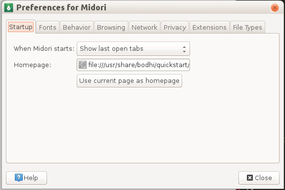

Stopping the QuickStart Guide
QuickStart Guide AutoStart
As of Bodhi 3.0, the QuickStart guide now opens on Startup. Stoping this behavior is easy though.Step 1. Remove Midori from the start-up applications list.
Main Menu --> Settings --> All --> Apps --> Startup Applications
Go to the "Order" tab, select Midori and hit Remove
Now hit Apply and Close the window. Midori will no longer autostart on every boot or login.
But Midori will still open with the Quick Start loaded as your homepage. For that we have
2. Change the Homepage in Midori
To do so click on the Menu button just below the close button in the top-right corner of the window.

Go to Preferences and on the Startup tab select "Show Homepage", fill in your preferred page and close the window. Next time you open Midori it will go straight to that website.